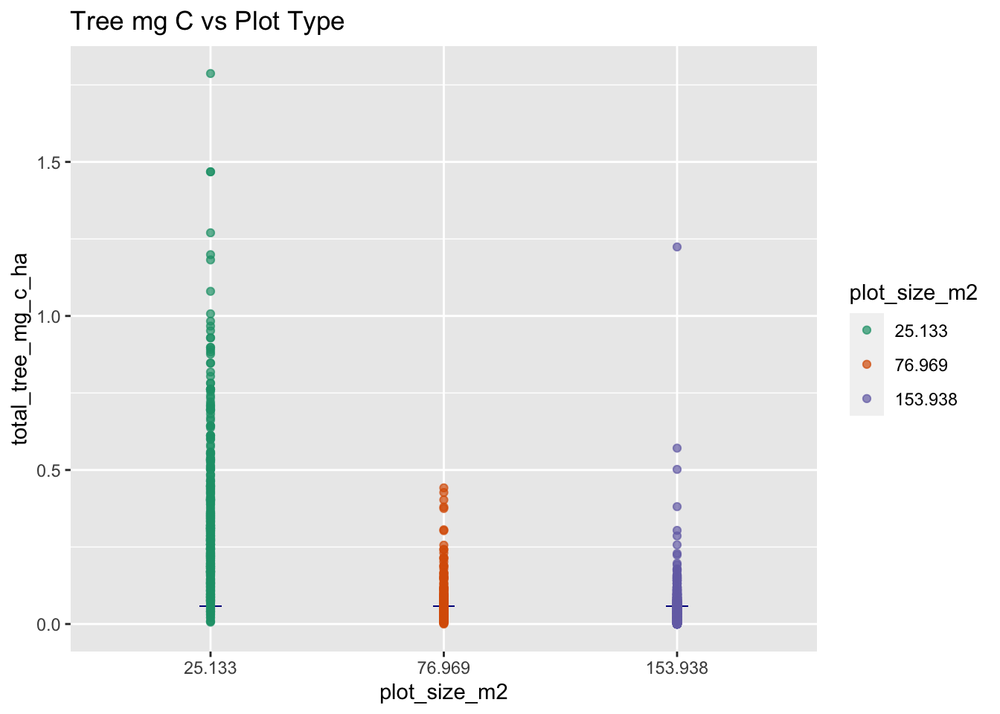
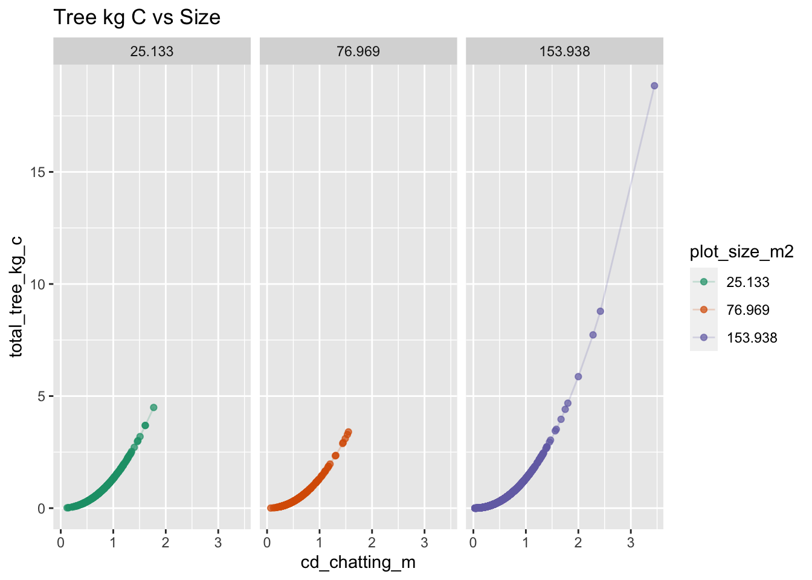

here() starts at /Users/javipatron/Documents/MEDS/Courses/eds222/homework/eds222-finalproject
library(janitor)
Attaching package: 'janitor'
The following objects are masked from 'package:stats':
chisq.test, fisher.test
library(knitr)library(pwr)
#Setting my filepathsrootdir <- ("/Users/javipatron/Documents/MEDS/Courses/eds222/homework/eds222-finalproject")data <-file.path(rootdir,"data")
Reading the .csv files
#Load data Mangrove Datamangrove_df <-read_csv(here::here("data","clean_monitoring_data_javier.csv")) |>clean_names()
Rows: 10826 Columns: 20
── Column specification ────────────────────────────────────────────────────────
Delimiter: ","
chr (1): Plot
dbl (19): Plantation year, height (cm), canopy width 1 (cm), canopy width 2 ...
ℹ Use `spec()` to retrieve the full column specification for this data.
ℹ Specify the column types or set `show_col_types = FALSE` to quiet this message.
Rows: 4339 Columns: 21
── Column specification ────────────────────────────────────────────────────────
Delimiter: ","
chr (4): name, species, Plot, LOG AGB AVI
dbl (16): year, d30, Height (m), Height (cm), Crown Dia (m), Crown Dia (cm),...
ℹ Use `spec()` to retrieve the full column specification for this data.
ℹ Specify the column types or set `show_col_types = FALSE` to quiet this message.
plantation_year plot height_cm canopy_width_1_cm
Min. :2010 Length:10826 Min. : 7.00 Min. : 1.00
1st Qu.:2017 Class :character 1st Qu.: 43.00 1st Qu.: 37.00
Median :2019 Mode :character Median : 57.00 Median : 52.00
Mean :2018 Mean : 66.91 Mean : 54.18
3rd Qu.:2020 3rd Qu.: 85.00 3rd Qu.: 70.00
Max. :2020 Max. :280.00 Max. :689.00
canopy_width_2_cm crown_area_m2 cd_chatting_m chatting_agb_kg
Min. : 0.20 Min. : 0.0000 Min. :0.0100 Min. : 0.0000
1st Qu.: 30.00 1st Qu.: 0.0960 1st Qu.:0.3500 1st Qu.: 0.1680
Median : 45.00 Median : 0.1890 Median :0.4900 Median : 0.3440
Mean : 46.49 Mean : 0.2536 Mean :0.5059 Mean : 0.4889
3rd Qu.: 60.00 3rd Qu.: 0.3220 3rd Qu.:0.6400 3rd Qu.: 0.6100
Max. :633.00 Max. :10.0940 Max. :3.5900 Max. :24.3560
chatting_agb_mg_ha comley_mc_guinness_planted_bgb_kg
Min. :0.00000 Min. : 0.0000
1st Qu.:0.01100 1st Qu.: 0.1550
Median :0.02300 Median : 0.3180
Mean :0.04392 Mean : 0.4513
3rd Qu.:0.04200 3rd Qu.: 0.5630
Max. :2.88500 Max. :22.4810
comley_mc_guinness_planted_bgb_mg_ha total_tree_kg total_tree_mg_ha
Min. :0.00000 Min. : 0.0000 Min. :0.00000
1st Qu.:0.01000 1st Qu.: 0.3220 1st Qu.:0.02100
Median :0.02100 Median : 0.6620 Median :0.04400
Mean :0.04052 Mean : 0.9402 Mean :0.08448
3rd Qu.:0.03800 3rd Qu.: 1.1730 3rd Qu.:0.08000
Max. :2.66300 Max. :46.8370 Max. :5.54700
chatting_agc_kg_c chatting_agc_mg_c_ha comley_mc_guinness_planted_bgc_kg_c
Min. : 0.0000 Min. :0.00000 Min. :0.000
1st Qu.: 0.0800 1st Qu.:0.00500 1st Qu.:0.060
Median : 0.1650 Median :0.01100 Median :0.124
Mean : 0.2347 Mean :0.02108 Mean :0.176
3rd Qu.: 0.2930 3rd Qu.:0.02000 3rd Qu.:0.220
Max. :11.6910 Max. :1.38500 Max. :8.767
comley_mc_guinness_planted_bgc_mg_c_ha total_tree_kg_c total_tree_mg_c_ha
Min. :0.00000 Min. : 0.0000 Min. :0.00000
1st Qu.:0.00400 1st Qu.: 0.1410 1st Qu.:0.00900
Median :0.00800 Median : 0.2890 Median :0.01900
Mean :0.01582 Mean : 0.4107 Mean :0.03691
3rd Qu.:0.01500 3rd Qu.: 0.5120 3rd Qu.:0.03500
Max. :1.03800 Max. :20.4580 Max. :2.42300
plot_size_m2
Min. : 25.13
1st Qu.:153.94
Median :153.94
Mean :147.71
3rd Qu.:153.94
Max. :153.94
unique(mangrove_df$plantation_year)
[1] 2017 2010 2020 2019
unique(mangrove_df$plot_size_m2)
[1] 153.938 25.133 76.969
class(mangrove_df$plantation_year)
[1] "numeric"
#Cleaning and adding some changes to the data
#Changing some datamangrove_df$plantation_year <-as.character(mangrove_df$plantation_year)mangrove_df$plot <-as.character(mangrove_df$plot)mangrove_df$plot_size_m2 <-as.factor(mangrove_df$plot_size_m2)
Create a table that is grouped by the each plantation year containing the total number of sample plots and the total number of samples trees per plantation.
`summarise()` has grouped output by 'plantation_year'. You can override using
the `.groups` argument.
kable(mangrove_plots_summary)
plantation_year
plot_size_m2
plot_count
tot_samples
mean_plant_size_cm
mean_tot_carbon_g_c
2010
153.938
7
746
71.74397
943.5054
2017
25.133
4
323
79.02477
931.9690
2017
76.969
5
336
56.79762
480.3542
2017
153.938
18
3467
55.01183
453.9590
2019
153.938
8
998
49.92084
354.3487
2020
153.938
46
4956
42.16889
272.9068
Create plots that are relevant to your questions
Carbon Sequestration (kg/tree) vs Size
(_ cd_chatting_m, y = total_tree_kg_c _)
#Plotting variables of interestggplot(mangrove_df, aes(x=cd_chatting_m, y = total_tree_kg_c, color = plantation_year)) +facet_wrap(~plantation_year) +geom_point(alpha =0.7) +labs(title ="Carbon Sequastration (kg/tree) vs Size")
Lets focus on the 2017 plantation year
Why? - We have more data - There are 3 different sampling collection efforts.
# Potential need to rename the plots as "Sample Plot#1", "Sample plot #2", etc# Potential need to rename the plot size as "25m2", "77m2", "154m2"mangrove_2017 <- mangrove_df |>filter(plantation_year ==2017) |>filter(total_tree_mg_c_ha <1.9) |>select(height_cm,plot, plot_size_m2, cd_chatting_m,total_tree_kg_c,total_tree_mg_c_ha)
Create a table that contains the means of carbon and carbon per hectare for each type plot and each plot
ggplot(mangrove_plots_2017, aes(x=plot_size_m2, y=mean_tree_c_kg, fill = plot_size_m2)) +geom_col() +labs(title ="Carbon mean per tree")+scale_fill_brewer(palette ="Spectral") +scale_x_discrete(limits = positions)
ggplot(mangrove_plots_2017, aes(x=plot_size_m2, y=mean_tree_c_ha_mg, fill = plot_size_m2)) +geom_col() +labs(title ="Carbon mean per tree per ha") +scale_fill_brewer(palette ="Spectral") +scale_x_discrete(limits = positions)
Compare the 3 histograms of plot size m2
ggplot(mangrove_2017, aes(x=total_tree_mg_c_ha, color = plot_size_m2)) +geom_freqpoly(aes(y =stat(density))) +scale_color_brewer(palette ="Set1")
`stat_bin()` using `bins = 30`. Pick better value with `binwidth`.
Option 1 For variable Selection. Total Carbon per tree for Hectare vs Sample Plot Type (Plot Type 25m2 vs 154m2)
`stat_bin()` using `bins = 30`. Pick better value with `binwidth`.
#Variable Total Carbon per tree (mg)mangrove_2017 |>ggplot(aes(x=plot_size_m2, y = total_tree_mg_c_ha ,color = plot_size_m2)) +geom_point(aes(y=mean(total_tree_mg_c_ha)), size =3, alpha =0.9, color ="darkblue", shape =3 ) +geom_point(alpha =0.7) +labs(title ="Tree mg C vs Plot Type") +scale_color_brewer(palette ="Dark2")

Option 1: State your null and alternative hypotheses
The Null Hypothesis - The Total Carbon per Tree (mg) mean in the Sample Size of 25m2 is no different to the 154m2.
Alternative - The Total Carbon per Tree (mg) in the sample size of 25m2 is different than the one to the 154m2.
In other words: For the null hypothesis you state that there is no difference in the means of the total carbon per tree (mg) between the sample size of 25m2 and 154m2.
Alternative hypothesis you state that there is a difference in the means of the total carbon per tree (mg) between the sample size of 25m2 and 154m2.
\[H_0: \mu_{25m2} - \mu_{154m2} = 0\]
Calculate the Point Estimate
#Calculate Point Estimatepoint_est_1 = (mangrove_plots_2017$mean_tree_c_ha_mg[1] - mangrove_plots_2017$mean_tree_c_ha_mg[3])print(point_est_1)
[1] 0.33011
Calculate the Standard Error
#Define the Standard Errorn_25m = mangrove_plots_2017[[1,2]]n_154m = mangrove_plots_2017[[3,2]]s_25m = mangrove_plots_2017[[1,9]]s_154m = mangrove_plots_2017[[3,9]]SE_1 =as.numeric(sqrt(s_25m^2/n_25m + s_154m^2/n_154m))print(SE_1)
Welch Two Sample t-test
data: mangrove_2017$total_tree_mg_c_ha[mangrove_2017$plot_size_m2 == 25.133] and mangrove_2017$total_tree_mg_c_ha[mangrove_2017$plot_size_m2 == 153.938]
t = 22.036, df = 321.07, p-value < 2.2e-16
alternative hypothesis: true difference in means is not equal to 0
95 percent confidence interval:
0.3006378 0.3595823
sample estimates:
mean of x mean of y
0.3596012 0.0294912
Check differences between manual and t.test automatic
#P-value with T.Testprint(option1_ttest$p.value)
[1] 3.383952e-66
#P-Value with pnormpval_1 =pnorm(point_est_1, mean =0, sd = SE_1, lower.tail =FALSE)print(pval_1)
[1] 6.504133e-108
With this results we can reject the null as the p-value is very small, meaning there is a significant difference between the means on Carbon storage in each tree per hectare between the sample plot size of 25m2 to the sample size of 154m2
crit_val_1 =qnorm(0.025, lower.tail = F)ci_lower_1 =round(point_est_1 - crit_val_1*SE_1, 2)ci_upper_1 =round(point_est_1 + crit_val_1*SE_1, 2)print(paste0("There is 95% probability that between [", ci_lower_1,",",ci_upper_1, "] it contains the difference in total tree carbon (mg) per hecatre across sample plot 25m2 and 154m2"))
[1] "There is 95% probability that between [0.3,0.36] it contains the difference in total tree carbon (mg) per hecatre across sample plot 25m2 and 154m2"
We are 95% confident that the true value lies between 0.30 - 0.36 Tree Carbon sequestration in mg per hectare.
mangrove_2017 |>filter(plot_size_m2 %in%c(25.133, 153.938)) |>ggplot(aes(x=plot_size_m2, y = total_tree_mg_c_ha,color = plot_size_m2)) +geom_point(aes(y=mean(total_tree_mg_c_ha)), size =3, alpha =0.9, color ="darkblue", shape =3 ) +geom_point(alpha =0.7) +labs(title ="Tree mg C vs Plot Type") +scale_color_brewer(palette ="Dark2") +geom_hline(yintercept =0.31, linetype ="dashed", color ="deepskyblue4", size = .5)+geom_hline(yintercept =0.37, linetype ="dashed", color ="orange", size = .5)
Option 2 For variable Selection Total Carbon per tree vs Tree Size
#Variable Total Carbon per tree (kg)mangrove_2017 |>ggplot(aes(x=cd_chatting_m, y = total_tree_kg_c)) +geom_line(alpha =0.3, color ="deepskyblue4") +geom_point(alpha =0.8, color ="darkolivegreen") +labs(title ="Tree kg C vs Size",x ="Size (chatt m)",y ="Tree Carbon (kg)")
mangrove_2017 |>ggplot(aes(x=cd_chatting_m, y = total_tree_kg_c, col = plot_size_m2)) +geom_point(alpha =0.7) +geom_line(alpha =0.2) +labs(title ="Tree kg C vs Size") +facet_wrap(~ plot_size_m2) +scale_color_brewer(palette ="Dark2")

Starting the Statistical analysis
#Calculate the lm of total carbon per tree in relation to their sizelm_carbon <-lm(cd_chatting_m ~ total_tree_kg_c, data=mangrove_2017) |>summary()crit_val_95 <-qnorm(0.025, lower.tail =FALSE)PE_carbon <- lm_carbon$coefficients[,"Estimate"][2]SE_carbon <- lm_carbon$coefficients[,"Std. Error"][2]ci_lower =round(PE_carbon - crit_val_95 * SE_carbon, 2)ci_upper =round(PE_carbon + crit_val_95 * SE_carbon, 2)ci_lower
total_tree_kg_c
0.38
ci_upper
total_tree_kg_c
0.39
INCOMPLETE: WHY ARE THE CONFIDENCE INTERVALS SO DIFFERENT to the t.test?
The order of the t.test matters as they are the same number but just positive, or negative.
Welch Two Sample t-test
data: mangrove_2017$cd_chatting_m and mangrove_2017$total_tree_kg_c
t = 8.0664, df = 5645.6, p-value = 8.774e-16
alternative hypothesis: true difference in means is not equal to 0
95 percent confidence interval:
0.05948785 0.09768625
sample estimates:
mean of x mean of y
0.569709 0.491122
Confident Intervals: We are 95% confident that our point estimate lays within the confidence interval of 0.059 - 0.097 of tree size.
mangrove_2017 |>ggplot(aes(x=cd_chatting_m, y = total_tree_kg_c)) +geom_line(alpha =0.3, color ="deepskyblue4") +geom_point(alpha =0.8, color ="darkolivegreen") +labs(title ="Tree kg C vs Size",x ="Size (chatt m)",y ="Tree Carbon (kg)") +geom_hline(yintercept =2.7, color ="orange")+geom_hline(yintercept =2.5, color ="deepskyblue4")
Now same thing but with the logs
#Take the log of the columns to make it a linear regressionmangrove_2017_option2 <- mangrove_2017 |>mutate(total_tree_kg_c =log10(total_tree_kg_c),cd_chatting_m =log10(cd_chatting_m))#Plot the linear regressionmangrove_2017_option2 |>ggplot(aes(x=cd_chatting_m, y = total_tree_kg_c)) +geom_line(alpha =0.3, color ="deepskyblue4") +geom_point(alpha =0.8, color ="darkolivegreen") +labs(title ="Tree kg C vs Size")
#Take the lm of the new linear modelmangrove_2017_option2 <- mangrove_2017_option2[is.finite(mangrove_2017_option2$total_tree_kg_c), ]lm_carbon_2 <-lm(total_tree_kg_c ~ cd_chatting_m, data=mangrove_2017_option2) |>summary()lm_carbon_2
Call:
lm(formula = total_tree_kg_c ~ cd_chatting_m, data = mangrove_2017_option2)
Residuals:
Min 1Q Median 3Q Max
-0.109881 -0.003842 -0.003167 0.004802 0.159457
Coefficients:
Estimate Std. Error t value Pr(>|t|)
(Intercept) 0.1235047 0.0002424 509.5 <2e-16 ***
cd_chatting_m 2.1557605 0.0006629 3252.2 <2e-16 ***
---
Signif. codes: 0 '***' 0.001 '**' 0.01 '*' 0.05 '.' 0.1 ' ' 1
Residual standard error: 0.009414 on 4119 degrees of freedom
Multiple R-squared: 0.9996, Adjusted R-squared: 0.9996
F-statistic: 1.058e+07 on 1 and 4119 DF, p-value: < 2.2e-16
Calculate Point Estimate, Standard Error, Point Estimate, Confident Intervals
mangrove_2017_option2 |>ggplot(aes(x=cd_chatting_m, y = total_tree_kg_c)) +geom_line(alpha =0.3, color ="deepskyblue4") +geom_point(alpha =0.8, color ="darkolivegreen") +labs(title ="Tree kg C vs Size") +geom_hline(yintercept =-0.19, color ="orange")+geom_hline(yintercept =-0.22, color ="deepskyblue4")
Welch Two Sample t-test
data: mangrove_2017_option2$cd_chatting_m and mangrove_2017_option2$total_tree_kg_c
t = 26.009, df = 5814, p-value < 2.2e-16
alternative hypothesis: true difference in means is not equal to 0
95 percent confidence interval:
0.1969960 0.2291136
sample estimates:
mean of x mean of y
-0.2912018 -0.5042566
ci_lower_2
cd_chatting_m
2.15
ci_upper_2
cd_chatting_m
2.16
Option 3 - Power Calculation Define the Sample Number with Total Carbon per tree
Using our table mangrove_plots_2017 with the means, sd per sample type we can calculate our variables to define the power needed.
State your null and alternative hypotheses
The Null Hypothesis - The Total Carbon per Tree (mg) mean in the Sample Size of 25m2 is no different to the 154m2.
Alternative - The Total Carbon per Tree (mg) in the sample size of 25m2 is different than the one to the 154m2.
Question: When we have different categorical variables can you state a hypothesis will all of the variables or you need to specify the difference between two?
Plot the histogram distribution
#Total Tree Carbon (mg/ha)mangrove_2017 |>filter(plot_size_m2 %in%c(25.133, 76.969, 153.938)) |>ggplot(aes(x=total_tree_mg_c_ha, fill = plot_size_m2)) +geom_histogram(alpha =0.8) +labs(title ="Total Carbon per Tree (mg/ha)")
`stat_bin()` using `bins = 30`. Pick better value with `binwidth`.
ggplot(mangrove_2017, aes(x=total_tree_mg_c_ha, color = plot_size_m2)) +geom_freqpoly(aes(y =stat(density)))
`stat_bin()` using `bins = 30`. Pick better value with `binwidth`.
**The problem that we see in this histograms is that the means overlaps between the plot size 154m2 and the plot size 77m2. In this case we will need more samples in order to get the 95% confidence we are looking for.
#Total Tree Carbon (mg/ha)# Just the 25m2mangrove_2017 |>filter(plot_size_m2 ==25.133) |>ggplot(aes(x=total_tree_mg_c_ha)) +geom_histogram(aes(y =stat(density)), fill ="lightgreen", color ="gray30") +geom_density(col ="gray30", alpha =0.5, fill ="gray10") +labs(title ="Total Carbon per Tree (mg/ha)")
`stat_bin()` using `bins = 30`. Pick better value with `binwidth`.
#Total Tree Carbon (mg/ha)# Just the 77m2mangrove_2017 |>filter(plot_size_m2 ==76.969) |>ggplot(aes(x=total_tree_mg_c_ha)) +geom_histogram(aes(y =stat(density)), fill ="lightblue", color ="gray30") +geom_density(col ="gray30", alpha =0.5, fill ="gray10") +labs(title ="Total Carbon per Tree (mg/ha)")
`stat_bin()` using `bins = 30`. Pick better value with `binwidth`.
#Total Tree Carbon (mg/ha)# Just the 154m2mangrove_2017 |>filter(plot_size_m2 ==153.938) |>ggplot(aes(x=total_tree_mg_c_ha)) +geom_histogram(aes(y =stat(density)), fill ="pink", color ="gray30") +geom_density(col ="gray30", alpha =0.5, fill ="gray10") +labs(title ="Total Carbon per Tree (mg/ha)")
`stat_bin()` using `bins = 30`. Pick better value with `binwidth`.
In this box plot we can see how is the variance “means” merging from one plot size to the other.
mangrove_2017 |>ggplot(aes(x=plot_size_m2, y = total_tree_mg_c_ha,color = plot_size_m2)) +geom_boxplot() +labs(title ="Tree mg C vs Plot Type") +scale_color_brewer(palette ="Dark2")
Create a random table of 10 samples per plot size.
#Create the random tablerandom_table <- mangrove_2017 |>group_by(plot_size_m2) |>slice_sample(n =10)rand_means <- random_table |>group_by(plot_size_m2) |>summarise(mean =mean(total_tree_mg_c_ha))
Create a histogram too visualize the new 10 random numbers and see the overlap between the two sample sizes. This will help us understand the power calculation. Remember that if the overlap is high then you need a higher number of samples to increase your probability.
ggplot(random_table, aes(x = total_tree_mg_c_ha)) +geom_histogram(aes(y =stat(density), fill = plot_size_m2),alpha =0.8) +geom_density(aes(fill = plot_size_m2, col = plot_size_m2),alpha =0.2) +geom_vline(xintercept = rand_means[[1,2]], color ="red") +geom_vline(xintercept = rand_means[[2,2]], color ="green") +geom_vline(xintercept = rand_means[[3,2]], color ="blue") +ylim(0, 30) +xlim(0,1.5)
`stat_bin()` using `bins = 30`. Pick better value with `binwidth`.
Calculate power table with the means and sd of your random table
#Create a table with means and SD per plot sizepower_table <- random_table |>group_by(plot_size_m2) |>summarise(tot_samples =n(),tot_plot_count =length(unique(plot)),mean_chatting_size_m =mean(cd_chatting_m),mean_tree_c_kg =mean(total_tree_kg_c),mean_tree_c_ha_mg =mean(total_tree_mg_c_ha),sd_chatting_size_m =sd(cd_chatting_m),sd_tree_c_kg =mean(total_tree_kg_c),sd_tree_c_ha_mg =sd(total_tree_mg_c_ha)) |>mutate(plot_size_m2 =c("25m2", "77m2", "154m2"))
Use the pwr() package to define power with the random samples.
# Calculate power with the random samples of 10random_sd_25m = power_table[[1,9]]random_sd_154m = power_table[[3,9]]alpha =0.05power =0.90random_d =as.numeric(sqrt(random_sd_25m^2/10+ random_sd_154m^2/10))print(random_d)
[1] 0.09809483
pwr.t.test(n =10, d = random_d, sig.level=.05, type="one.sample",alternative ="greater")
One-sample t test power calculation
n = 10
d = 0.09809483
sig.level = 0.05
power = 0.0873507
alternative = greater
Use the pwr package data to define the power with the whole table
# Calculate the power with all datasd_25m = mangrove_plots_2017[[1,9]]sd_154m = mangrove_plots_2017[[3,9]]alpha =0.05power =0.90d =as.numeric(sqrt(sd_25m^2/2+ sd_154m^2/2))print(d)
[1] 0.1913295
#Use pwr.t2n.test when the sample size are not the samepwr.t2n.test(n1 =321, n2=3467, d=d )
t test power calculation
n1 = 321
n2 = 3467
d = 0.1913295
sig.level = 0.05
power = 0.9063645
alternative = two.sided